Глава 5. ОСНОВЫ ФИЗИКИ ТВЕРДОГО ТЕЛА
§1. ПОЛУПРОВОДНИКИ§2. ПРОВОДИМОСТЬ ПОЛУПРОВОДНИКОВ
§3. ТОК В ПОЛУПРОВОДНИКАХ
§4. ЭКСПЕРИМЕНТАЛЬНЫЕ МЕТОДЫ ИССЛЕДОВАНИЯ ПОЛУПРОВОДНИКОВ
§5. ЭЛЕКТРОННО–ДЫРОЧНЫЙ ПЕРЕХОД (P-N–ПЕРЕХОД)
§6. ПРИЛОЖЕНИЯ
§1. ПОЛУПРОВОДНИКИ
Само название “полупроводник” произошло от различия электропроводности полупроводников от электропроводности металлов и диэлектриков.
Действительно,
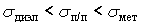
. Но этот признак не является решающим в классификации.Основными свойствами, отличающими полупроводники от других твердых тел, являются следующие:
- Характер и величина зависимости электропроводности от температуры. Проводимость полупроводников возрастает с увеличением температуры по экспоненциальному закону
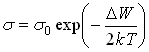
(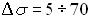
на 1° Кельвин). У металлов увеличение температуры приводит к уменьшению проводимости. - Сильное влияние примеси на проводимость. Что значит сильнее? Концентрация примеси
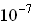
,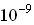
% уже существенно увеличивает проводимость. У металлов же введение примеси уменьшает проводимость. Почему? - Высокая чувствительность электрических свойств полупроводников ко всякого рода внешним воздействиям (механическая деформация, облучение светом, рентгеновскими лучами или быстрыми частицами и др.).
В электронике находят применение ограниченное число полупроводников. Это германий, кремний, арсенид галия, антимонид индия и др.
Кристаллическая структура полупроводников и зонная теория
1. Применяемые в технике полупроводники имеют весьма совершенную кристаллическую структуру – атомы размещены в пространстве на постоянных расстояниях, образуя кристаллическую решетку. Такие полупроводники, как германий и кремний имеют структуру типа алмаза, в которой каждый атом окружен такими же атомами, находящимися в вершинах правильного тетраэдра. Плотность размещения атомов для германия 4,45·1022 1/см3, для кремния – 5·1022 см -3.
Каждый атом в кристаллической решетке или  электрически нейтрален и связан ковалентными (парно–электронными) связями с четырьмя равно–отстоящими от него соседними атомами. В полупроводниках типа
электрически нейтрален и связан ковалентными (парно–электронными) связями с четырьмя равно–отстоящими от него соседними атомами. В полупроводниках типа
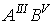
ионно–ковалентная связь. Валентные электроны распределяются между соседними атомами. В результате каждый атом окружен стабильной группой из восьми электронов связи.2. Если не нужно выделять кристаллографического направления, такую решетку изображают на плоскости (рисунок 1.1).
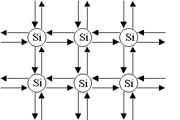
Рисунок 1.1- Кристаллическая решетка  , изображенная на плоскости
, изображенная на плоскости
Это идеальная решетка. При
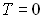
все узлы заняты, все связи заполнены. Свободных носителей заряда нет.3. С точки зрения зонной теории твердого тела, такой кристалл изображается энергетической диаграммой, представленной на рисунке 1.2.
|
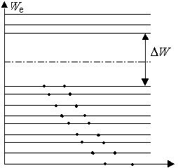 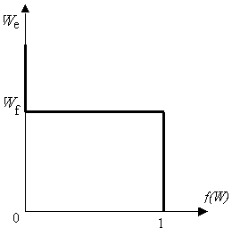 |
|
|
Рисунок 1.2 - Энергетическая диаграмма полупроводников |
Рисунок 1.3 – Зависимость функции распределения электронов от энергии при Т=0 К. |
Заполнение энергетических уровней электронами подчиняется статистике Ферми–Дирака, в основе которой лежат следующие положения:
- все электроны тождественны;
- выполняется принцип Паули;
- функция распределения
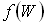
, т. е. вероятность заполнения уровня с энергией W имеет следующий вид:
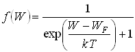
где – энергия Ферми, смысл–уровень энергии, вероятность заполнения которого равна
– энергия Ферми, смысл–уровень энергии, вероятность заполнения которого равна 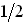
.
По определению функция распределения есть отношение числа частиц с энергией в интервале от W до W+dW к числу возможных состояний в этом же интервале энергий N(W), т. е.
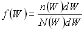
При
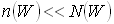
(обычный случай для полупроводников, используемых для приборов) единицей в знаменателе функции распределения Ферми–Дирака можно пренебречь, и функция принимает вид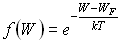
Зная функцию распределения и
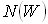
можно определить число частиц с определенной энергией :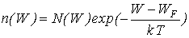
где k – постоянная Больцмана.
При T=0 (рисунок 1.3) валентная зона полностью заполнена f(W)=1 (это электроны, участвующие в ковалентных связях); зона проводимости пустая f(W)=0 (свободных носителей заряда нет), ΔW– ширина запрещенной зоны. Уровень Ферми
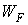
расположен строго посередине запрещенной зоны.§2. ПРОВОДИМОСТЬ ПОЛУПРОВОДНИКОВ
Проводимость полупроводников определяется двумя типами носителей заряда, их концентрацией, которая зависит от примесей и температуры.
Собственная проводимость
Собственная проводимость полупроводников с точки зрения кристаллической структуры.
Полупроводник, в узлах кристаллической решетки которого расположены только собственные атомы, называется собственным.
|
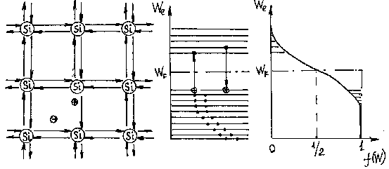 |
||
|
Рисунок 2.1а – Генерация пар зарядов с точки зрения кристаллической структуры |
Рисунок 2.1б – С точки зрения зонной теории |
Рисунок 2.1в – Зависимость f(W) от W при Т>0 |
Рисунок 2.1 - Схема образования электрона и дырки (термогенерация).
а)T = 0 К – случай рассмотрен выше. Если приложить электрическое поле, то тока не появится, т. к. нет свободных носителей заряда.
б)T > 0 К– при тепловых колебаниях атомов в решетке кристалла могут быть разорваны некоторые ковалентные связи , в результате чего в междоузельном пространстве появляются свободные электроны (рисунок 2.1а), а покинутое электроном место имеет избыточный положительный заряд, называемый дыркой. Дырка может быть занята электроном из соседней связи, при этом пустое место–дырка переместится в эту соседнюю связь и т. д. Следовательно, перемещение дырки по кристаллу можно рассматривать, как движение положительного заряда. Свободный электрон и дырка будут перемещаться по кристаллу хаотически в отсутствии электрического поля и направленно при наличии поля, создавая электронную и дырочную составляющие электрического тока. Процесс возникновения электронно–дырочных пар называется генерацией. На образование одной пары расходуется энергия, необходимая для разрыва ковалентной связи (Ge–0,72 B, Si–1,1 эВ, GaAs–1,41 эВ ).
Концентрация собственных электронов определяется температурой:
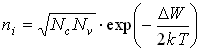
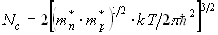
,где  – эффективная плотность состояний в зоне проводимости,
– эффективная плотность состояний в зоне проводимости,
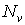
– эффективная плотность состояний в валентной зоне.После подстановки численных значений физических констант
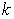
,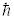
,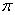
и введения относительных выражений для эффективных масс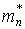
и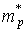
и температуры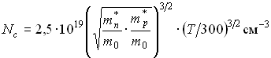
– рассчитывается аналогично, и в инженерных расчетах
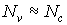
. Если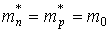
(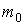
– масса покоя электрона) и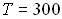
К, то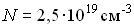
.Аналогично рассчитывается концентрация собственных дырок при
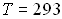
К и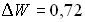
эВ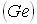
,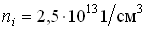
. А в кремнии при этой же температуре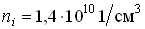
. Т. к. , то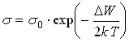
.При встрече электрона с дыркой происходит рекомбинация.
Скорость рекомбинации, т. е. количество исчезающих в единицу времени электронно–дырочных пар равна:
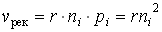
,где  – коэффициент рекомбинации.
– коэффициент рекомбинации.
Процессы термогенерации и рекомбинации электронов и дырок идут одновременно.
При установившемся равновесии
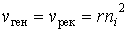
.Это условие определяет равновесную концентрацию носителей заряда
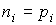
в собственном полупроводнике при заданной температуре.Разрыв ковалентной связи и образование пары электрон–дырка описывается, как переход электрона из валентной зоны в зону проводимости, на что тратится энергия равная ширине запрещенной зоны (рисунок 2.1б). Свободный электрон может двигаться в зоне проводимости (энергетический интервал между уровнями в которой очень мал
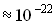
эВ), свободная дырка может двигаться только в валентной зоне, ее энергия на энергетической диаграмме возрастает вниз. Функция распределения Ферми меняет вид (рисунок 2.1в): заштрихованные “хвосты” одинаковы по величине и в зоне проводимости, и в валентной зоне показывают, что вероятность образования электрона и дырки одинаковы. Рекомбинация электрона и дырки соответствует переходу электрона из зоны проводимости на свободный уровень валентной зоны.Примесная проводимость полупроводников
1. Донорная проводимость
Донорная проводимость возникает в полупроводниках, которые легированы примесью с валентностью, большей валентности собственных атомов. Например, в  (валентность
(валентность
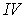
) вводятся атомы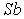
(валентность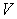
).а)Донорная проводимость с точки зрения кристаллической решетки
|
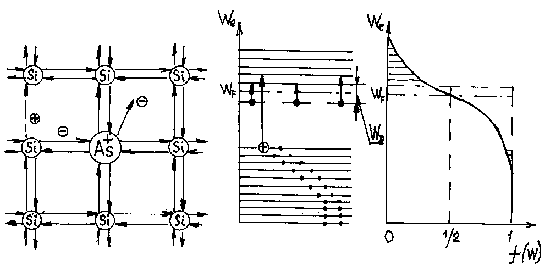 |
||
|
Рисунок 2.2а – Образование свободных носителей заряда с точки зрения кристаллической решетки |
Рисунок 2.2б - С точки зрения зонной теории |
Рисунок 2.2в - Зависимость |
Рисунок 2.2 - Схема появления свободных электронов за счет доноров.
Пятый электрон атома  не участвует в создании ковалентных связей и оказывается наиболее слабо связанным. Он легко отрывается за счет энергии теплового движения, становится свободным и способен создавать электронный ток при наличии электрического поля. Этот процесс аналогичен ионизации атома в газе. При таком образовании свободного электрона не наблюдается разрыв ковалентных связей и образование дырки. Атом примеси становится положительным ионом, но он по–прежнему прочно “сидит” в узле решетки (рисунок 2.2а). Такие примеси называют донорными, а полупроводник донорным, электронным или п–типа. Как правило, при комнатной температуре все доноры ионизированы и
не участвует в создании ковалентных связей и оказывается наиболее слабо связанным. Он легко отрывается за счет энергии теплового движения, становится свободным и способен создавать электронный ток при наличии электрического поля. Этот процесс аналогичен ионизации атома в газе. При таком образовании свободного электрона не наблюдается разрыв ковалентных связей и образование дырки. Атом примеси становится положительным ионом, но он по–прежнему прочно “сидит” в узле решетки (рисунок 2.2а). Такие примеси называют донорными, а полупроводник донорным, электронным или п–типа. Как правило, при комнатной температуре все доноры ионизированы и
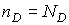
(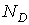
– концентрация доноров, обычно для ). Кроме того, происходит и процесс генерации пар электрон–дырка, но в таком полупроводнике электронов значительно больше, чем дырок: , а . Электроны в таком полупроводнике называются основными носителями заряда, дырки неосновными. При этом не нарушается электрическая нейтральность полупроводника.б) С точки зрения зонной теории положение пятого электрона атома примеси на энергетической диаграмме изображают помещенным на примесном (донорном) уровне, расположенным в верхней половине запрещенной зоны, вблизи зоны проводимости.я соответствует энергии необходимой для отрыва электрона от атома (например для в  эВ). Этому процессу соответствует переход электрона с донорного уровня в зону проводимости. Концентрация свободных электронов за счет донорной примеси и ее зависимость от температуры оценивается следующим выражением:
эВ). Этому процессу соответствует переход электрона с донорного уровня в зону проводимости. Концентрация свободных электронов за счет донорной примеси и ее зависимость от температуры оценивается следующим выражением:
.
Вероятность появления электрона в зоне проводимости в донорном полупроводнике значительно больше вероятности образования дырки в валентной зоне, что отражается графиком распределения Ферми. Уровень Ферми в донорных полупроводниках лежит в верхней половине запрещенной зоны (рисунок 2.2б, 2.2в). По-прежнему возможны процессы рекомбинации, но при каждой температуре устанавливается равновесие.
Концентрация электронов в зоне проводимости определяется выражением:
 .
.
Если обозначить концентрацию дырок в донорном полупроводнике, то справедливо соотношение . Отсюда можно определить концентрацию дырок в донорном полупроводнике
.
2. Акцепторная проводимость
Акцепторная проводимость наблюдается в полупроводниках, легированных примесью, с валентностью меньше валентности основного атома. Например, , ,  в
в  .
.
а)Акцепторная проводимость с точки зрения кристаллической решетки. Одна связь около атома  оказывается незаполненной. При электрон соседних атомов может перейти, заполнив эту связь (рисунок 2.3а).
оказывается незаполненной. При электрон соседних атомов может перейти, заполнив эту связь (рисунок 2.3а).
В результате атом  становится отрицательным ионом, “сидящим” в узле решетки, а около атома кремния, от которого “ушел” электрон образовалась дырка. Свободные электроны при этом не образуются. Энергия образования дырки мала (например, для
становится отрицательным ионом, “сидящим” в узле решетки, а около атома кремния, от которого “ушел” электрон образовалась дырка. Свободные электроны при этом не образуются. Энергия образования дырки мала (например, для  в
в  эВ; для
эВ; для  в
в  эВ).
эВ).
Примесь, благодаря которой появляются дырки, называется акцепторной, а полупроводник акцепторным, дырочным или  -типа.
-типа.
|
Рисунок 2.3.а – Образование свободных носителей заряда с точки зрения кристаллической решетки |
Рисунок 2.3б – С точки зрения зонной теории |
Рисунок 2.3в – Зависимость |
Рисунок 2.3 - Схема образования дырки за счет акцепторной примеси.
Одновременно проходит термогенерация электронно–дырочных пар, но дырок больше и они являются основными носителями, а электроны неосновными.
б) С точки зрения зонной теории положение свободного места, на котором может быть захвачен электрон изображается акцепторным уровнем, расположенным в нижней половине запрещенной зоны (рисунок 2.3б). Расстояние между уровнем акцептора и потолком валентной зоны соответствует энергии образования дырки, т. е. электрон переходит из валентной зоны на примесный уровень. Концентрация дырок, появившихся за счет акцепторных примесей оценивается выражением:
,
где NА– концентрация акцепторов. В таких полупроводниках вероятность появления дырки в валентной зоне больше, чем вероятность появления электрона в зоне проводимости. Это отражено графиком функции Ферми и положением уровня Ферми (рисунок 2.3в).
Как правило, в реальных полупроводниках есть и донорные акцепторные примеси. Они компенсируют друг друга, и тип полупроводника определяется разностью концентраций примеси. Например, если , то полупроводник  -типа и концентрация дырок определяется разностью . И наоборот.
-типа и концентрация дырок определяется разностью . И наоборот.
§3. ТОК В ПОЛУПРОВОДНИКАХ
Дрейфовый ток
Когда отсутствует внешнее поле, электроны и дырки находятся в хаотическом движении. При наличии электрического поля на хаотическое движение накладывается компонента направленного движения, т. е. дырки направленно движутся вдоль электрического поля, электроны против, создавая ток одного направления (рисунок 3.1).
Рисунок 3.1 – Схема движения электронов и дырок под действием внешнего поля.
Ток обусловленный внешним полем напряженностью называют дрейфовым. Электронная и дырочная составляющие плотности дрейфового тока равны следующим выражениям:
,
где – заряд электрона, и  – концентрация дырок и электронов:
– концентрация дырок и электронов:
,
т. е. это выражение закона Ома в дифференциальной форме, где и  подвижности электронов и дырок, т. е. скорости электронов и дырок , возникающие при напряженности поля равном единице:
подвижности электронов и дырок, т. е. скорости электронов и дырок , возникающие при напряженности поля равном единице:
;.
Например, при  К
К
, в 
, в 
Диффузионный ток
Электрический ток, обусловленный градиентом концентрации носителей называют диффузионным током.
В одномерном случае плотность диффузионного тока электронов и дырок равна следующим выражениям:
где и – градиент концентрации электронов и дырок, и – коэффициенты диффузии электронов и дырок, численно равные количеству электронов (или дырок), проходящему через единицу площади в единицу времени при градиенте концентрации носителей равном единице.
Движение носителей заряда происходит в сторону убывания их концентрации (знак минус у дырочной составляющей). Электронная составляющая тока имеет знак (+), т. к. за направление тока принято направление положительного заряда. В общем случае в полупроводниках может быть и электрическое поле и градиент концентрации носителей. Полная плотность тока пи этом равна:
- электронная составляющая тока;
- дырочная составляющая.
§4. ЭКСПЕРИМЕНТАЛЬНЫЕ МЕТОДЫ ИССЛЕДОВАНИЯ ПОЛУПРОВОДНИКОВ
Основными характеристиками полупроводниковых материалов являются тип проводимости, концентрация основных носителей заряда, ширина запрещенной зоны, подвижность носителей заряда, положение примесных уровней в запрещенной зоне.
1) Ширина запрещенной зоны и положение примесных уровней, как правило, определяют по экспериментальной зависимости проводимости от температуры  .
.
Так как , то проводимость полупроводника может быть записана в виде суммы двух членов:
– определяет собственную проводимость.
– определяет примесную проводимость.
Графически эта зависимость представлена на рисунке 4.1.
Рисунок 4.1 – Экспериментальная зависимость проводимости полупроводника от температуры.
;
Отсюда можно определить положение примесного уровня и ширину запрещенной зоны .
Если полупроводник с несколькими примесями, то на графике должно появиться несколько “ступенек”. Таков метод исследования запрещенной зоны.
Рабочая область для приборов (плато на графике рисунка 4.1) ограничена температурами и  , которые вычисляются по формулам:
, которые вычисляются по формулам:
.
При вычислении значений  и следует вначале взять значение (при 300 К), а затем вычислить при
и следует вначале взять значение (при 300 К), а затем вычислить при  и по формуле:
и по формуле:
2)Для определения типа проводимости полупроводников и концентрации свободных носителей заряда в них используется эффект Холла, суть которого заключена в следующем: если полупроводник с током поместить в магнитное поле с индукцией , направленной перпендикулярно току , то между верхней и нижней гранью образца появляется разность потенциалов (рисунок 4.2), называемая Холловской Э.Д.С. Опыт показал, что величина , где – константа, зависящая от типа полупроводника. Эффект Холла объясняется электронной теорией и является следствием существования силы Лоренца. Упрощенно можно сказать так, что на каждый основной носитель заряда (электрон или дырку), движущийся со скоростью в магнитном поле , действует сила Лоренца, перемещая его к одной из граней образца.
Рисунок 4.2 – Схема, поясняющая возникновение Холловской Э.Д.С.
Перемещение зарядов будет происходить до тех пор, пока сила действующая со стороны возникшего внутри кристалла электрического поля напряженностью  , не сравняется с величиной силы Лоренца, т. е.:
, не сравняется с величиной силы Лоренца, т. е.:
,.
Это выражение совпадает с выражением , полученным из опыта. Постоянная Холла равна . Эта зависимость изменяется в квантовом эффекте Холла. По результатам эксперимента можно определить следующее:
- по знаку
 тип проводимости полупроводника,
тип проводимости полупроводника, - по значению определить концентрацию носителей заряда в полупроводнике
- используя значение проводимости и концентрации основных носителей заряда
 можно вычислить их подвижность:
можно вычислить их подвижность:
,
§5. ЭЛЕКТРОННО–ДЫРОЧНЫЙ ПЕРЕХОД (P-N–ПЕРЕХОД)
1. При контакте двух полупроводников  и
и  –типа проводимости концентрация электронов и дырок по обе стороны от границы значительно различаются. Диффундируя во встречных направлениях через пограничный слой, дырки и электроны рекомбинируют. Поэтому область контакта оказывается сильно обедненной свободными носителями заряда и приобретает большое сопротивление. Кроме того, на границе оказывается двойной электрический слой, образованный отрицательными ионами акцепторной примеси и положительными ионами донорной примеси (на рисунке ионы примесей изображены кружками). Р – n – слой обеднен носителями зарядов из-за их взаимной компенсации. Этот слой создает электрическое поле , противодействующее дальнейшему переходу через слой основных носителей.
–типа проводимости концентрация электронов и дырок по обе стороны от границы значительно различаются. Диффундируя во встречных направлениях через пограничный слой, дырки и электроны рекомбинируют. Поэтому область контакта оказывается сильно обедненной свободными носителями заряда и приобретает большое сопротивление. Кроме того, на границе оказывается двойной электрический слой, образованный отрицательными ионами акцепторной примеси и положительными ионами донорной примеси (на рисунке ионы примесей изображены кружками). Р – n – слой обеднен носителями зарядов из-за их взаимной компенсации. Этот слой создает электрическое поле , противодействующее дальнейшему переходу через слой основных носителей.
Возникшая контактная разность потенциалов равна:
,
где – концентрация дырок в материале  –типа, – концентрация дырок в материале –типа,
–типа, – концентрация дырок в материале –типа,  – постоянная Больцмана, – абсолютная температура,
– постоянная Больцмана, – абсолютная температура,  – заряд электрона.
– заряд электрона.
Рисунок 5.1 –  –переход в равновесии
–переход в равновесии
а – схематическое изображение  –перехода;
–перехода;
б – распределение концентрации свободных носителей заряда вдоль оси Х;
в – распределение потенциала вдоль оси Х;
г – энергетическая диаграмма.
При К и , В. Ширина образовавшегося  –перехода равна:
–перехода равна:
и  – концентрация акцепторов и доноров соответственно. мкм для предыдущего случая. Поле в
– концентрация акцепторов и доноров соответственно. мкм для предыдущего случая. Поле в  –переходе неоднородное. График распределения напряженности вдоль
–переходе неоднородное. График распределения напряженности вдоль  –перехода представлен на рисунке 5.1в пунктиром, максимальная напряженность рассчитывается по формуле:
–перехода представлен на рисунке 5.1в пунктиром, максимальная напряженность рассчитывается по формуле:
,
где и – ширина положительной и отрицательной части  –перехода. При – переход симметричный и .
–перехода. При – переход симметричный и .
Для рассматриваемого выше численного примера:
В/м .
Равновесие достигается при такой высоте потенциального барьера , при которой значение энергии Ферми будет одинаково для всех областей (рисунок 5.1г). На рисунках изображены  –переход, распределение концентрации свободных носителей заряда (рисунок 5.1б) по областям, распределение потенциала (рисунок 5.1в) и энергетическая диаграмма –перехода в равновесии (рисунок 5.1г). Собственное поле –перехода препятствует диффузии через переход основных носителей (дырок из
–переход, распределение концентрации свободных носителей заряда (рисунок 5.1б) по областям, распределение потенциала (рисунок 5.1в) и энергетическая диаграмма –перехода в равновесии (рисунок 5.1г). Собственное поле –перехода препятствует диффузии через переход основных носителей (дырок из  –области, электронов из
–области, электронов из  –области) и ускоряет неосновные. В равновесии диффузионный ток основных носителей равен дрейфовому току неосновных
–области) и ускоряет неосновные. В равновесии диффузионный ток основных носителей равен дрейфовому току неосновных  . Полный ток .
. Полный ток .
2. Если приложить к  –переходу внешнее электрическое поле (
–переходу внешнее электрическое поле ( ) направление напряженности которого в области контакта противоположно собственному полю () (рисунок 5.2), то электроны от источника, поступая в
) направление напряженности которого в области контакта противоположно собственному полю () (рисунок 5.2), то электроны от источника, поступая в  –область уменьшают объемный заряд. Ширина
–область уменьшают объемный заряд. Ширина  –перехода становится меньше:
–перехода становится меньше:
.
Меньше становится и скачок потенциала , т. е. барьер для основных носителей заряда уменьшится и через переход идет диффузионный ток, плотность которого возрастает с увеличением приложенного напряжения по экспоненциальному закону:
.
Дрейфовый ток определяется только числом неосновных носителей . Плотность полного тока через  –переход называемого в этом случае прямым, равна:
–переход называемого в этом случае прямым, равна:
.
Следовательно при прямом включении через p–n–переход вводится (инжектируется) дополнительная концентрация неосновных носителей заряда (дырок в n–область и электронов в p–область). Распределение концентрации свободных носителей при прямом включении представлена сплошной кривой на рисунке 5.2б. По мере удаления от –перехода концентрация инжектированных неосновных носителей заряда убывает за счет рекомбинации до равновесной. Небольшое возрастание концентрации основных носителей заряда около –перехода наблюдается только при больших уровнях инжекции за счет “притягивания” основных носителей инжектированными неосновными. Инжекция является одним из важных способов введения неравновесной концентрации зарядов.
3. Если внешнее поле совпадает по направлению с собственным полем  –перехода, то , контактная разность потенциалов возрастает , переход станет шире:
–перехода, то , контактная разность потенциалов возрастает , переход станет шире:
.
Поле p–n–перехода становится “более ускоряющим” для неосновных носителей и удаляет часть этих носителей из объема вблизи  –перехода. Этот процесс называется экстракцией. В результате экстракции неосновных носителей заряда электрическим полем (на рисунке 5.3 представлено распределение свободных носителей заряда), концентрация неосновных носителей вблизи p–n–перехода уменьшается. Энергетический барьер для диффузии основных носителей заряда увеличится и диффузионный ток быстро уменьшится до нуля. Полный ток при этом определится дрейфовым током неосновных носителей заряда. Этот ток очень мал и называется обратным током. Следовательно, переход обладает способностью проводить ток в одном направлении значительно больше, чем в другом. Зависимость плотности тока через идеальный –переход от внешнего напряжения представлена на рисунке 5.4 и определяется следующей формулой:
–перехода. Этот процесс называется экстракцией. В результате экстракции неосновных носителей заряда электрическим полем (на рисунке 5.3 представлено распределение свободных носителей заряда), концентрация неосновных носителей вблизи p–n–перехода уменьшается. Энергетический барьер для диффузии основных носителей заряда увеличится и диффузионный ток быстро уменьшится до нуля. Полный ток при этом определится дрейфовым током неосновных носителей заряда. Этот ток очень мал и называется обратным током. Следовательно, переход обладает способностью проводить ток в одном направлении значительно больше, чем в другом. Зависимость плотности тока через идеальный –переход от внешнего напряжения представлена на рисунке 5.4 и определяется следующей формулой:
,
где – плотность обратного тока при достаточно большом напряжении.
Рисунок 5.2 – –переход при прямом включении
а – схематическое изображение  –перехода;
–перехода;
б – распределение свободных носителей;
в – распределение потенциала;
г – энергетическая диаграмма.
Для расчета прямого тока  подставляется со знаком (+), а для обратного со знаком (-). Значение (плотность тока насыщения), созданного неосновными электронами и дырками может быть вычислена по формулам:
подставляется со знаком (+), а для обратного со знаком (-). Значение (плотность тока насыщения), созданного неосновными электронами и дырками может быть вычислена по формулам:
, ,
где , – среднее время жизни электрона и дырки соответственно  ,
,  – коэффициенты диффузии, вычисленные по формулам Эйнштейна:
– коэффициенты диффузии, вычисленные по формулам Эйнштейна:
,
 и – подвижности электронов и дырок соответственно.
и – подвижности электронов и дырок соответственно.
Суммарная плотность тока j0 через p–n– переход равна:
На рисунке 5.4 отражено влияние температуры на зависимость j от  на примере германия. При увеличении температуры –перехода возрастает термогенерация электронно–дырочных пар, что значительно сказывается на величине обратного тока, определяемого малым количеством неосновных носителей (пунктирная кривая рисунка 5.4) На рисунке 5.5 показаны в сравнении зависимости j от
на примере германия. При увеличении температуры –перехода возрастает термогенерация электронно–дырочных пар, что значительно сказывается на величине обратного тока, определяемого малым количеством неосновных носителей (пунктирная кривая рисунка 5.4) На рисунке 5.5 показаны в сравнении зависимости j от  для идеального
для идеального  –перехода (сплошная кривая) и реального. Отличие в прямой ветви характеристики объясняется падением напряжения на “объеме” полупроводников
–перехода (сплошная кривая) и реального. Отличие в прямой ветви характеристики объясняется падением напряжения на “объеме” полупроводников  и
и  –типа, в обратной ветви – током утечки по поверхности и наступающим при определенном пробое (электрическом, тепловом).
–типа, в обратной ветви – током утечки по поверхности и наступающим при определенном пробое (электрическом, тепловом).
Рисунок 5.3 –  –переход при обратном включении
–переход при обратном включении
а – схематическое изображение  –перехода;
–перехода;
б – распределение потенциала вдоль оси Х;
в – энергетическая диаграмма;
г – распределение концентрации свободных носителей заряда.
Рисунок 5.4 – Зависимость тока через –переход от напряжения при разных температурах
Рисунок 5.5 – Зависимость тока через  –переход от напряжения
–переход от напряжения
1 – идеальный  –переход;
–переход;
2 – реальный  –переход.
–переход.
§6. ПРИЛОЖЕНИЯ
6.1. Универсальные физические постоянные
Электрический заряд электрона, квант заряда Кл
Удельный заряд электрона Кл/кг
Масса покоя электрона кг
Масса покоя протона кг
Масса покоя нейтрона кг
Скорость света в вакууме м
Магнетон Бора
Магнетон ядерный
Постоянная Планка
Постоянная Авогадро
Постоянная Больцмана Дж/К
Постоянная Стефана–Больцмана
Постоянные Ридберга
Боровский радиус м
Комптоновская длина волны электрона м
Энергия ионизации атома водорода Дж
Энергия покоя электрона МэВ
Энергия покоя протона МэВ
Энергия покоя нейтрона МэВ
Электрическая постоянная Ф/м
Магнитная постоянная Гн/м
6.2 Приставки и множители для образования кратных и дольных единиц
|
Наименование (обозначение) |
Множитель |
|
Гита (Г) |
|
|
Мега (М) |
|
|
Кило (К) |
|
|
Деци (д) |
|
|
Санти (с) |
|
|
Милли (м) |
|
|
Микро (мк) |
|
|
Нано (н) |
|
|
Пико (п) |
|
|
Фемто (ф) |
6.3 соотношение между некоторыми несистемными единицами и единицами СИ
|
Наименование |
Множитель |
|
Длина |
(ангстрем) м |
|
Масса |
кг |
|
Энергия, работа |
1эВ Дж |
|
Количество теплоты |
1 кал = 4,19 Дж |
|
Давление |
1 атм = 760 мм.рт.ст. = 101,3 кПа |
|
Время |
1 год = с |
6.4 Вычисление некоторых интегралов.
Постоянные интегрирования в таблице опущены.